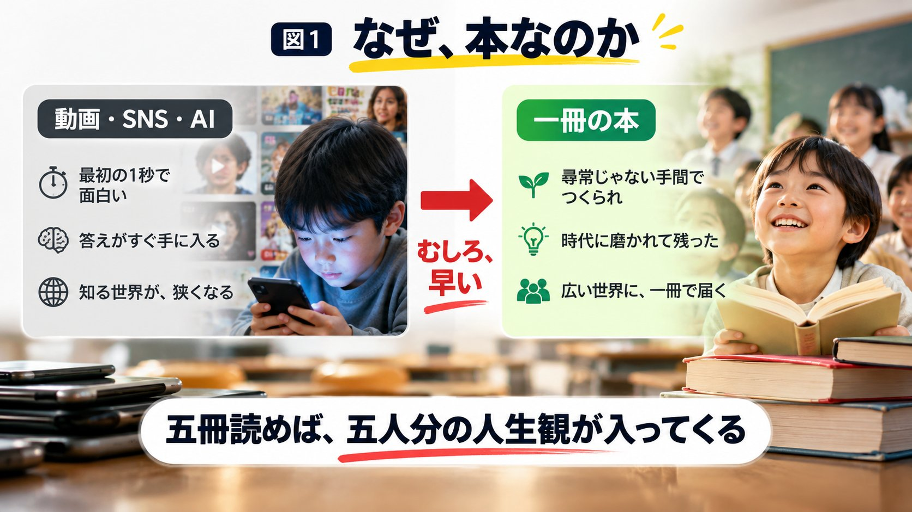
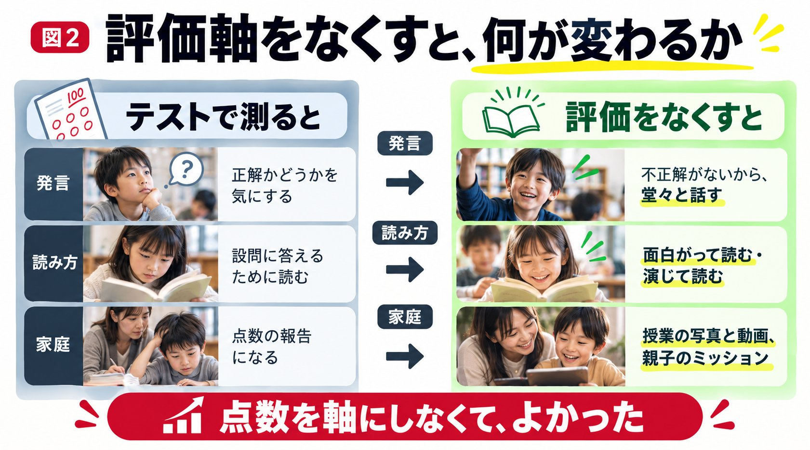
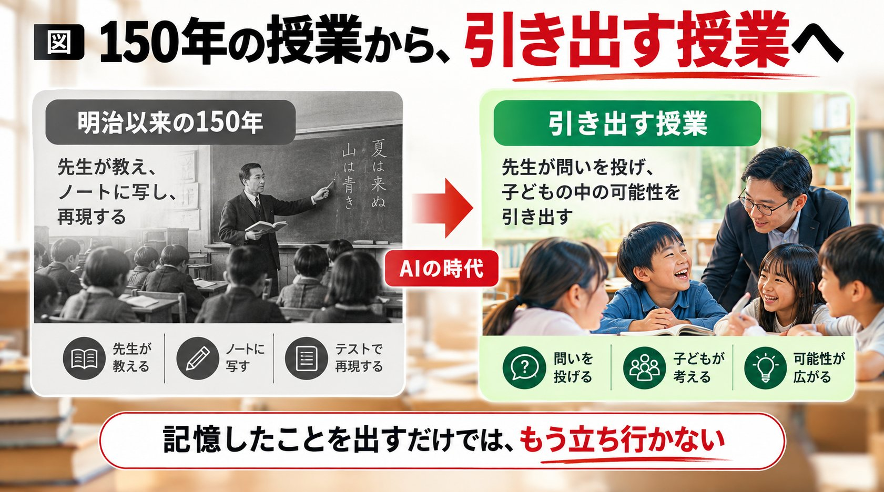

第一部 ── そもそも、なぜ本なのか
管野前回に引き続き、小学生の読書だけの塾をやっている鈴木健太先生、濱中志門先生です。前回の話には反響もありました。お二人が非常に楽しそうに話していて ── 先生が楽しく話していれば生徒も引き込まれる、というのは私の持論なんですが。この塾は、この3月に始めたそうですね。まだ半年。
鈴木そうなんです。しかも開校が決まったのが、前の年の11月で。
濱中もともと二人とも塾講師を15、16年やっていて、国語を重視する形の授業をずっとしてきました。そこから3月に、少し実験的なものを。
管野その割には評判がよくて、ある人がノートに投稿した「お二人の塾が素晴らしい」という記事を見つけたんです。答えのあるものを教え込むのではなく、生徒の力を、アウトプットを引き出す。一冊の本を三ヶ月かけて、70分の授業で、生徒が全然飽きない。── そもそも、なぜ本なんですか。
濱中結論を言うと、これからの時代、個人が自分の可能性を広げて幸せに生きる上でも、世の中をより良くしようと努めていく上でも、本を読めることが一番重要な力になると思っているんです。いろんなところで言われている通り、子どもたちが紙の本や文章を読むのは、すごく難しくなっています。
管野読まなくなりましたよね。動画を見て簡単に知識が手に入りますから。こんな分厚い本を苦労して読む必要はないのかな、という気もするんですが。手っ取り早く知識を獲得することと、試行錯誤しながら獲得することと、その比重はどう考えますか。
濱中こちら（試行錯誤）のほうが大事だと思います。答えを知ろうとしたら、僕らも使いますけど、AIに質問すればパッと手に入る。面白さを得るだけなら、YouTubeやSNSが最初の1秒で面白いし、永遠に出してくれる。でも、本というのは ── この一冊を作るのは尋常じゃなく大変なことだと思うんです。動画を作るのと比べても、尋常じゃないエネルギーをかけて作られたもの。しかも、ここに並べた多くは、だいぶ昔からずっと読み続けられて、時代に磨かれてきたもの。本当に手が込んでいて、価値のあるものにアクセスするなら、本がいい。ある意味、そのほうが早いんです。小説以外もそうですが、楽しく読めることは、自分の人生を豊かにする。一番子どもたちに身につけてもらいたいことです。
管野私も塾の先生をやって、5人の子どもを育て、4000人ぐらいの生徒を見てきました。日本の教育の、答えがもう決まっていることだけを当てにいく教育というのは、もう限界に達していると思っています。必要なのは教養的なもの、広く深く物事を考えていく力です。それは読書でつけるのが ── さっき「早い」とおっしゃいましたが、むしろ早いんですよね。
管野もし読書をしなかったら、人は自分の経験しか判断材料がない。経験主義者になってしまう。でも「いろんな経験をしています」と言っても、一人の人間のする経験は非常に狭い。本を一冊読むと、作者の人生観がまるごと入ってくるじゃないですか。だから、五冊読めば、五人分の人生観が入ってくる。
濱中何十年分もの経験と知見が、ぎゅっと詰まっていますからね。

§1 ── SNSもテストも、型にはめていく
管野手っ取り早く多様な価値観を身につけられる。だから特に小学生のうちに知的好奇心をつけておく、というのが私の持論です。それには家族の理解が必要で、親が学校のテストの点数ばかり見て、算数が40点しか取れていないとか、理科が50点だとか、そういう育て方をすると、肝心の大人になってから伸びが止まる。これは私の経験上の答えです。── 今こういうことを小学生にやらせて、どういう大人にしたいんですか。
濱中今「多様性」という言葉がありましたが、SNSも学校のテストも似ているなと思うのが、型にはまっていくんですよね。SNSや動画は「面白がらせよう」「見てくれ」と作ってある。そればかり摂取していると、結局、みんなが知っているもの、みんなが興味を持っているものしか知らないし、興味を持たない。
管野ということは、洗脳されやすい。その時代に一番影響のあるSNSに簡単に洗脳されてしまう。
濱中自分の持っている世界が小さいからこそ「いや、違うな」と思えない。テストも同じで、これが正解だ、これを覚えなさい、こうやるのが正しい、とやりすぎると、それもそれで小さい世界になる。僕らは世界の名著と言われるものや、日本のものも含めていろんな分野のものを読んでいますが、大きな世界を持っている人になってほしい。技術者や科学者で専門の知見を持っているのも立派ですが、その人自身が身の回りの狭い世界だけでなく、どれだけ広い世界を知っているか。クイズ的な「あれ知ってる、これ知ってる」とは違う。広い世界を持っている、というのが本当の教養の姿だと思っています。
管野専門家は間違えることがありますよね。視野が狭いので、たとえば物理学者が原子爆弾を作ってしまうように。でも幅広い教養を身につけていたら、ストップをかけられる理性が働くんじゃないか。
第二部 ── 「記憶を売り買いできる世界」をどう思う？
管野子どもたちが物事のもう一つの側面、二面性を考えるようになっている、と。具体的には、どういう場面で。
濱中広い世界を持った大人になってほしい、ということで採用したのがこの本です1。かわいい表紙で、結構新しい本なんですが ── 私、読んで絶句しました。いろんなパラレルワールドに主人公が飛び込んでいく話で、それぞれの世界に、今の現実にはないテクノロジーがある。たとえば自分のもう一つの体、クローンの体。体調が悪いときはスペアに意識を移して、元気いっぱい本番に参加できる。あるいは、記憶を売ったり買ったりできる世界。
管野自分の記憶はなくなってしまうけれど。
濱中楽しい記憶、幸せな記憶、「全国大会で優勝しました」のような貴重な記憶ほど高く売れる。未成年の中学生も当たり前にやる、という世界が「どう、素晴らしい世界でしょう」と最初に出てくる。子どもたちにも、私があえて「こんなテクノロジーがあったらよくない？」「こんなこともできるじゃん」と言いながら考えてもらうんです。でも読み進めると、一見素晴らしいっぽいものが、ちょっと怪しいな、と。
管野他の人のいい記憶をもらって、その喜びを感じられる。それがプラス面だと。
濱中出てくるパラレルワールドはどれも、話が進むと恐ろしい側面、決して楽園ではない一面が出てくる。考えさせられる話なんです。実際に子どもたちと ── ある子の発言がスタートだったんですが、「記憶を売り買いできる世界ができたら、いいと思うこと？」。自分の悲しい記憶があったら、売っちゃえば消える。
管野嫌な記憶を売ってしまう。
濱中面白いね、じゃあ緊急アンケート。みんなどう思う、いいと思う、ダメだと思う ── と聞いてみたんです。
管野結果は。
鈴木予想外でした。だいたい「いいじゃん」と言うと思うんですが、ほとんどみんな「それはちょっと良くない」と。
管野嫌な記憶を売るのは、良くない。
鈴木「嫌な記憶こそ、持っていたい」と。小学三年生です。嫌な記憶は消したいものですよね。大人だって、中学生や高校生に問えば、すぐ「消したい」と言うと思うんです。意外でした。なぜ消したくないかというと ── 嫌な記憶ほど自分を成長させるし、持っていないと、また同じような場面に出会ってしまうから。
管野すごい。それは真実ですよ。嫌な記憶から学ぶことがあって、成長することもあって、そこから学ばないとまた同じようなことが起こる。これは、ある種の法則じゃないですか。50代、60代ぐらいにならないと分からないことなのに、小学三年生で分かるということは ── もう伝わっているんですよ。昔は「六歳までは神の子」と言ったけれど、小学生は本当に、神がかっていますよね。
濱中私も誘導していないんです。むしろ「嫌な記憶がなくなるの、嬉しいじゃん」と言ったんですが、子どもたちは怒っていて。「そんなのダメに決まってるじゃないですか」「甘い言葉には騙されませんよ」ぐらいの勢いで。
管野お宅に来ている子どもたちは天才ばかりなんですか。
濱中今はそう感じていますが、最初からそうだったわけでは全然なくて。この半年の体験です。「本が嫌いです、苦手でした」「習い事を続けられなくて、読書教室も大丈夫か心配なんです」というご家庭もいらっしゃった。その子が今、目をキラキラさせながら、ある意味「怖い」「いやだ」と言いながら読んでいる。この数ヶ月の変化だな、と感じます。
鈴木だからこそ、点数を軸にしなくてよかったな、と。
§2 ── テストをやらない塾の、家庭への伝え方
管野テストをやらない。では、親御さんにはどう伝えるんですか。面談をする？
濱中毎回の授業の内容を、写真と動画と、僕らのコメントと一緒にお送りしています。
管野毎回。そうすると塾で何をやっていて、うちの子がどんな反応をしているか、ビジュアルですぐ見られる。
鈴木「親子でこれをちょっと語ってみてください」と、ある意味、家庭へのミッションのようなものも。
濱中この間は小学二年生と、世界の民話の本を読んでいて、途中まで私が読み聞かせをして「主人公のピンチです。なんと言って乗り切ったでしょうか」とみんなで考えたんです。その後のミッションが「今日は僕が読み聞かせをしたけど、君たちはおうちでおうちの人に同じところを読み聞かせして、同じ問いを出してきて。どんな答えがあったか、次回教えて」。お母さんに聞いた、お兄ちゃんに聞いた、と ── 家族にインタビューしてもらう。そんな形で、家庭も巻き込んでいます。
管野それが一番、子どもにとっていい教育だと私は思いますよ。私もそれを理想としていました。

§3 ── 先生が楽しんで作った授業は、絶対うまくいく
管野お二人は、次にどんなイベントをやろうかと相談し合って決めているんですか。
鈴木しています。この教室自体も、最初のコンセプトは今と結構違うんです。もう少し幅広く、読書以外もやろうと思っていた。それを絞るところから始めて。ただ読書をやるだけだと興味を持ってくれる子とそうでない子がいるので、どんな手を使ったら結果的に読書に前向きになってくれるのかを、すごく考えなければいけない。とにかく我々自身が一番楽しんでいるところは大事にしています。
管野それは素晴らしいと思いますよ。先生方が楽しんで「次の授業はこんな展開にしようぜ」「これを使ってみたら生徒はどうかな」── そうやって作った授業は、絶対うまくいくんです。先生の喜びが生徒に伝わる。学ぶ喜びは、そうやって伝わっていくものだから。ここをすごく大事にしていただきたい。イベントのことももっと聞きたかったのですが、時間が来てしまいました。塾はどこで。
濱中千葉県の流山おおたかの森です。駅から徒歩で通える場所でやっています。
管野これからも頑張ってやっていただきたいと思います。今日はどうもありがとうございました。
付録 ── 150年の授業から、引き出す授業へ
本編のあとに収録された、管野淳一によるまとめの一言です。
管野お二人の「読書しかしない授業」を聞いて、いかがだったでしょうか。私はとても感心しました。まさにアンチ学校教育だと思うんです。日本の学校教育は明治以来150年間、基本的に先生が黒板の前に立って知識を授け、子どもたちはそれをノートに忠実に写し、再現する ── そのパターンを150年続けてきた。しかしそれではオリジナリティが育たない。自分の考えを堂々と主張する、発言する力がなかなかつかない。AIの時代になって、記憶したことをただ外にアウトプットするだけでは、もう立ち行かない時代になっています。
管野そういう時代に、一冊の本から様々な考え方を学ぶ、あるいは引き出す。先生が正解を教えるのではなく、子どもたちの中に眠っている、潜在しているいろんな考えの可能性を先生が引き出す ── そういう授業デザインで行われている。小学生のうちに知的好奇心をつけることは非常に大切で、むしろ、小学生のうちは知的好奇心をつけるだけで、他には何もすることはないというぐらいに私は思っています。古い価値観の人は「算数はどうする、理科はどうする、社会はどうする」と相変わらず思うかもしれませんが。
管野一冊の本を三ヶ月かけて、70分の授業でやる。先生自身も楽しみながら、いろんな問いを考える。「こういう問いをかけたら、生徒はどう答えてくれるか」を日夜、試行錯誤しながら、楽しみながら、先生も生徒も一緒に対話している。生徒の意見を「いいな」と思ったら、先生はそれをホワイトボードに書く。そのこと自体が、生徒への賞賛・報酬になっているんですね。中学生ぐらいになると自分の考えを言わなくなりますが、小学生のうちはまだ自由に発言してくれる時期です。それを盛り上げて、何かについて議論し、考えることがすごく楽しいんだということを、身体を使って教えていく。このやり方が非常に素晴らしいと思いました。
管野私も40数年、塾で教えてきました。小説を読みながら生徒と議論するやり方を取り入れてきましたが、卒業生に聞くと、小学校のときにやったそういう授業が一番印象に残っている、とたいていの子が言うんです。── そして今回の試みには、保護者の協力も必要になります。塾でやった授業を、生徒が面白いと思って家でも話す。家族も一緒になって話す材料ができる。そこから話が派生して今の社会問題に広がって、親同士が話したり、子どもがお兄ちゃんやお姉ちゃんに聞いたりする。知的好奇心を育てる家庭の雰囲気ができる。そのことが、子どもにはとても大きな刺激になるのだろうと思っています。

ご家庭で試してみてください
この対談を「読んで終わり」にしないために、今日から試せる小さな三つを置いておきます。
1. 子どもに、「もしも」を一つ聞いてみる。
「記憶を売り買いできたら？」でなくて構いません。答えを評価しないと決めてから聞くと、小学生は大人の予想を裏切ります。
2. 読み聞かせを、子どもからしてもらう。
途中で止めて「この人、なんて言ったと思う？」と聞かれる側に回ってみてください。家の中の立場が、一度入れ替わります。
3. 点数の話をしない日を、週に一日つくる。
その日は「何を知ったか」「何が面白かったか」だけを聞く。評価の軸を一日外すと、子どもが何を話し出すかが分かります。